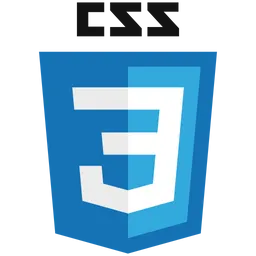

Andreh Marques

Linguagens:


- 

Meu nome é Andreh Marques, tenho 20 anos e estou começando um curso de
programação na FATEC Rubens Lara.
Desde criança, sempre gostei de praticar esportes, então aos meus 4 anos, eu
comecei a treinar karatê, e descobri que tinha aptidão para ser atleta. Ao longo de 10
anos de treino, consegui me consagrar BI Campeão Brasileiro e Penta Campeão
Paulista.
Fiz meu ensino médio integrado com técnico na ETECAF, onde cursei ADS. Foram
anos marcantes na minha vida, tendo infelizmente, um lapso de 1 ano sem aula por
conta da pandemia.
No ano de 2023, adentrei no exército brasileiro, passando por diversas experiências
que nunca vou esquecer na minha vida, lembranças essas que ensinam a dar valor
as coisas mais simples.
Num geral, tenho muitos hobbies, gosto tanto de sair com os amigos e ir para praia e
festas, quanto ficar em casa vendo anime e jogando. Estou sempre aberto a conhecer
pessoas novas e fazer amizades.